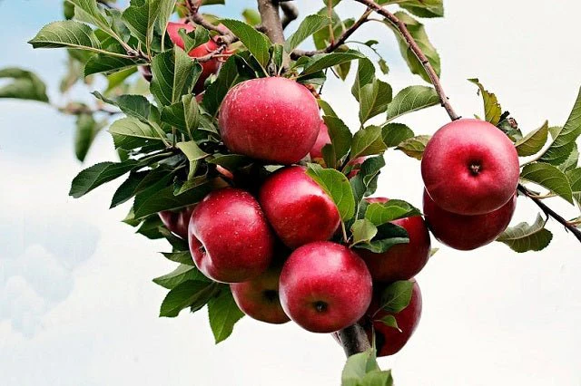

Ayuntamiento de Senés
JARDIN BOTANICO DE ESPECIES AUTOCTONAS DE SENES

Malus domestica

El manzano (Malus domestica) es un árbol frutal caducifolio ampliamente cultivado en regiones templadas, conocido por sus frutos, las manzanas, uno de los alimentos más consumidos a nivel mundial.
Presenta un tronco de tamaño medio con corteza grisácea y una copa redondeada y densa. Sus hojas son ovaladas, con borde dentado y textura suave. En primavera se cubre de flores blancas o rosadas, muy vistosas, que atraen a numerosos insectos polinizadores.
Las manzanas pueden presentar una gran variedad de formas, colores y sabores, dependiendo de la variedad cultivada, desde tonos verdes y amarillos hasta rojos intensos.
El manzano es originario de Asia central, aunque se ha extendido por todo el mundo. En la región mediterránea se cultiva principalmente en zonas con cierta altitud o climas más frescos.
En el entorno de Senés, su presencia es más limitada que otros frutales, pero puede encontrarse en huertos donde las condiciones son favorables.
La manzana es un fruto muy equilibrado desde el punto de vista nutricional, rica en fibra, vitaminas y antioxidantes. Es conocida por sus propiedades digestivas y su capacidad para regular el organismo.
Su consumo es recomendable en dietas saludables, siendo una de las frutas más completas y accesibles.
Además, se utiliza en múltiples preparaciones, tanto en fresco como en cocina y repostería.
El manzano simboliza el conocimiento, la salud y la vida. A lo largo de la historia ha estado presente en numerosas tradiciones y relatos culturales.
También representa la abundancia y la fertilidad, debido a su capacidad productiva.
En Senés, el manzano ha sido cultivado en huertos familiares en menor medida que otros frutales más adaptados al clima seco.
Sus frutos se consumían en fresco o se utilizaban en preparaciones caseras, especialmente en temporadas de cosecha.
También formaba parte de la diversidad de cultivos en huertos tradicionales.
El manzano florece en primavera, y sus frutos maduran entre finales de verano y otoño, dependiendo de la variedad.
Existen miles de variedades de manzanas en todo el mundo, adaptadas a diferentes climas y usos.
Es una de las frutas más cultivadas y consumidas a nivel global.
Su cultivo requiere cierta disponibilidad de agua y temperaturas más suaves que otros frutales mediterráneos.